Introduction
Xarray is a powerful Python library designed to work with labeled multi-dimensional arrays. It is like an extended version of NumPy and Pandas libraries. Xarray is mainly used for scientific data analysis. It is primarily used in the fields of oceanography and climate analysis. Xarray is an essential tool for data scientists and researchers, streamlining the analysis of complex, multi-dimensional datasets. Xarray solves the complexity of working with labeled, multi-dimensional data in scientific and geospatial domains.
Installation & Setup
Installing Xarray is can be done using pip in VS code terminal.:
pip install xarrayFor additional functionality, you can install optional dependencies:
pip install "xarray[complete]"This command installs Xarray along with recommended packages for I/O operations, parallel computing, and visualization.
Key Features & Explanation
Works with other tools
Connects well with popular other tools like NumPy, Pandas and file types like NetCDF or HDF5.
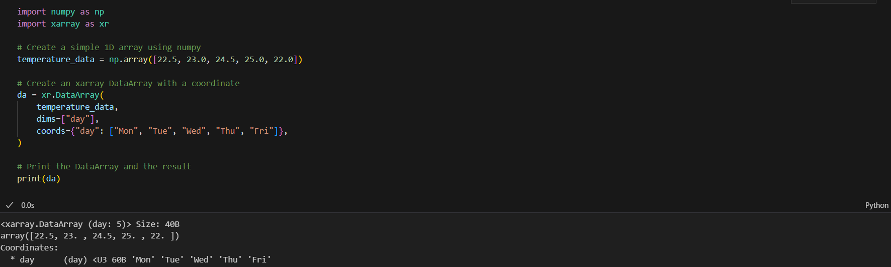Easy Calculations
Will do Math or other operations across the data quickly and clearly.
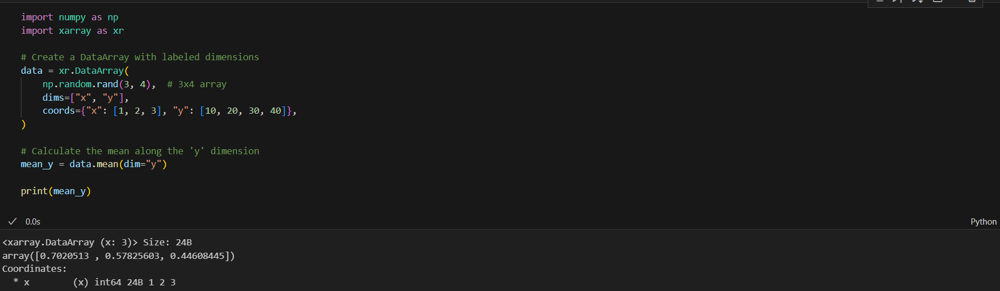Handles Big Data
Can work with large datasets without slowing down or running out of memory.
Powerful Operations
Xarray allows us to perform operations along specific dimensions by name
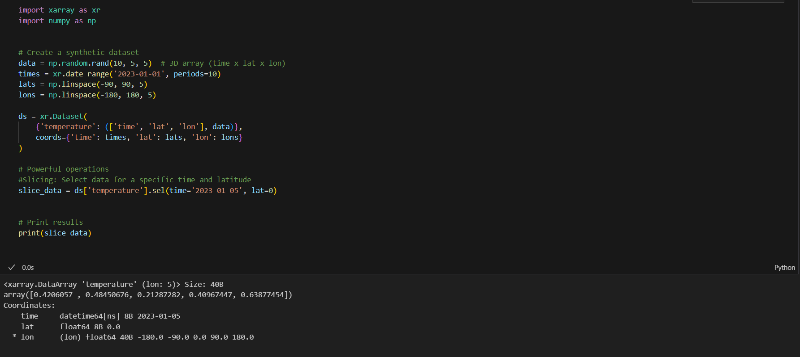Handling of missing data
Xarray handles missing data by allowing us to easily identify, fill, or ignore NaN (Not a Number) values during operations.
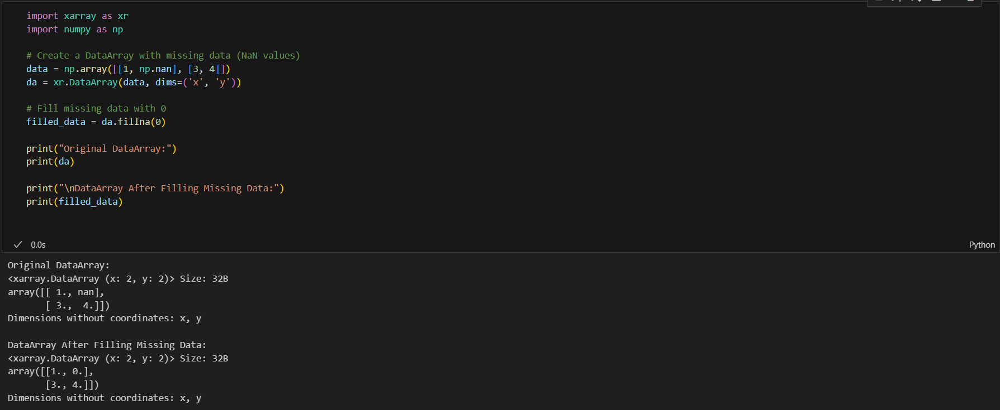Auto-allignment of data
Xarray automatically aligns data based on coordinates when performing operations. It will be easy to combine data with different shapes or coordinates without manual changes.
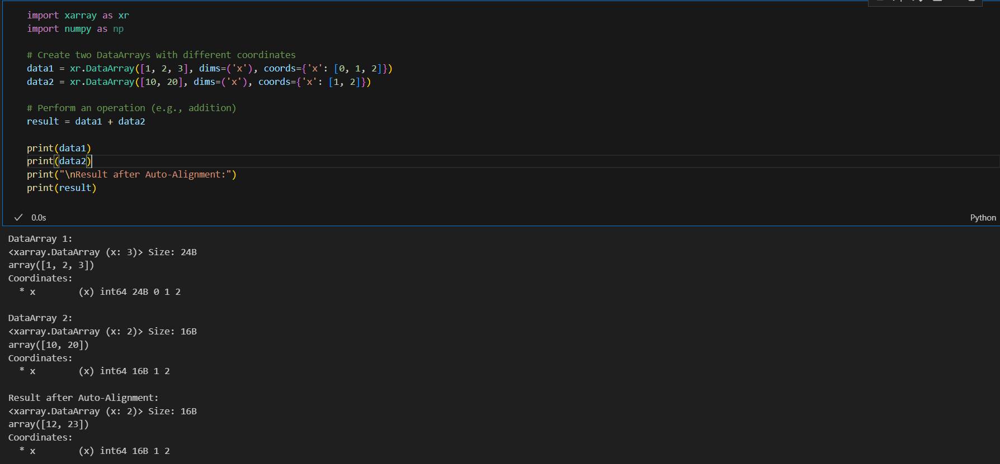DataArray and Dataset
Xarray provides two core data structures:
- DataArray: A labeled, multi-dimensional array. It is same as an NumPy array but has some additional metadata.
- Dataset: A collection of DataArrays that share the same dimensions and coordinates. It is similar to a dictionary of DataArrays
Visualization
Xarray integrates with visualization libraries like Matplotlib and Seaborn for easy plotting of multi-dimensional data.
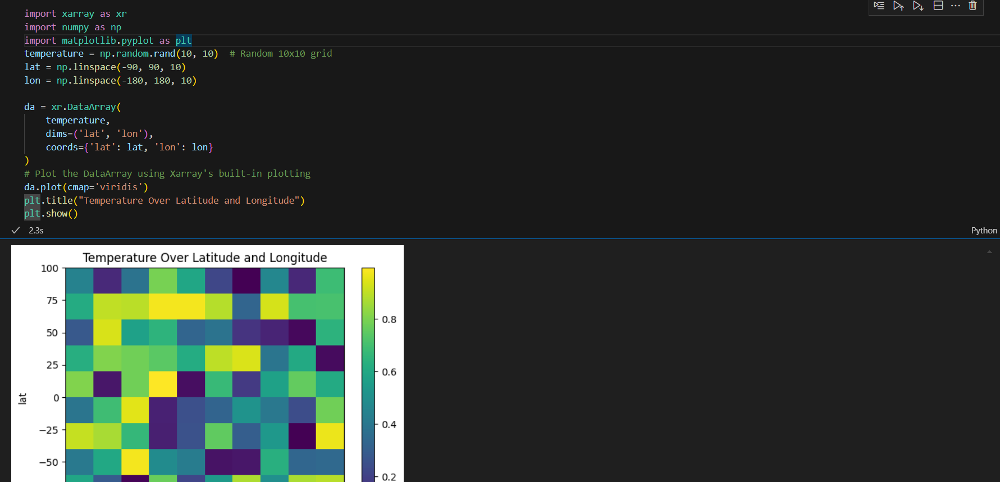Code Examples
Some examples to explain basic functionalities of xarray
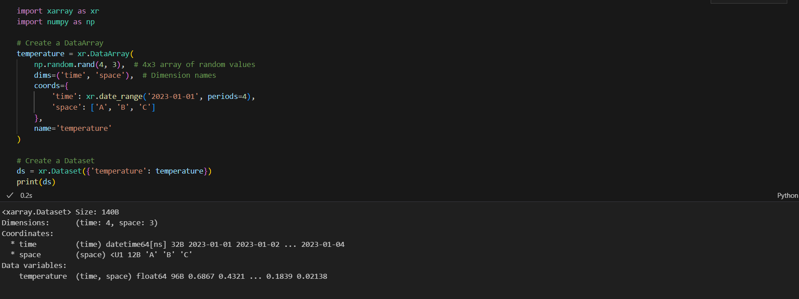The above code explains how to create a simple dataset
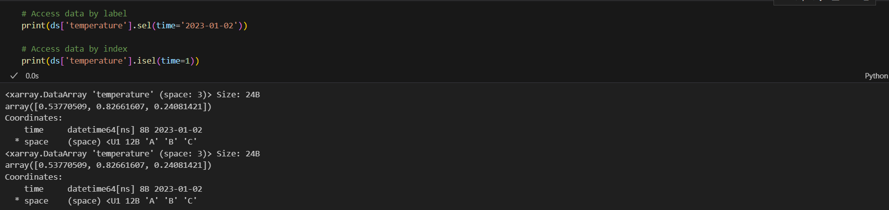The above code explains how to access data uisng .sel and .isel functions.".sel "selects data using label-based indexing (e.g., by coordinate values), while ".isel" selects data using integer-based indexing (e.g., by position).
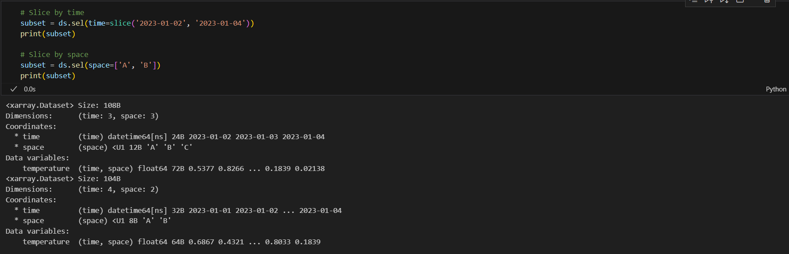The above code explains slicing and sunsetting data using xarray.
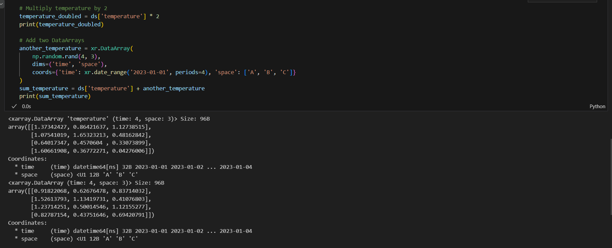The above code shows performing arithemetic operations on the dataset.
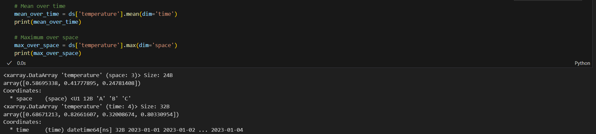The above code shows how to aggregate data along dimensions

We can group by the data and perform the operations on each group
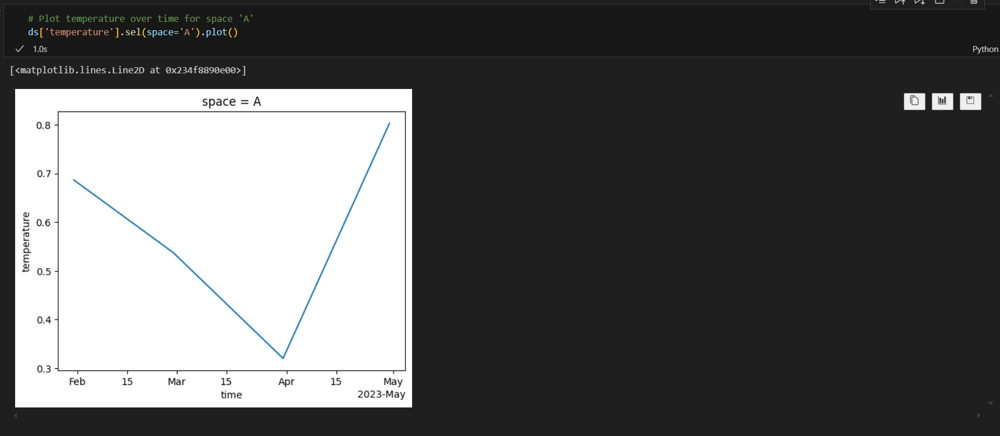The above code shows integrating of xarray with matplotlib to plot a graph
Use Cases
- Climate Data Analysis: Xarray excels in handling large-scale climate datasets, allowing researchers to easily work with multi-dimensional data like temperature, pressure, and humidity over time and space.
- Satellite Image Processing: The library's ability to handle labeled multi-dimensional arrays makes it ideal for processing and analyzing satellite imagery data.
- Financial Time Series: Xarray can be used to analyze complex financial datasets with multiple variables across different time scales.
Conclusion
Xarray simplifies the process of working with labeled multi-dimensional arrays in Python. Its simple interface, powerful operations, and integration with other Python libraries make it the best tool for data analysis across various domains. Whether you're dealing with climate data, satellite imagery, or any other multi-dimensional dataset, Xarray provides the tools to make the analysis more efficient.